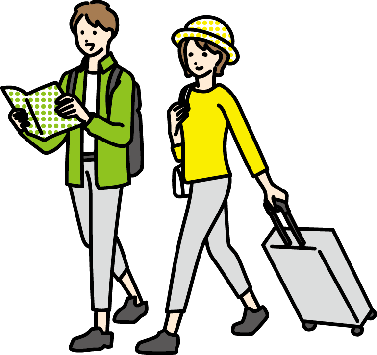

農泊について
ScrollWhat's "Nouhaku"?
農泊とは
農泊とは、農村や漁村に滞在し、地元の生活を体験したり、
地元の人々との交流を楽しむことができる旅行のことです。
旅館やホテルと違い、実際に農業や漁業を営むご家庭に宿泊します。
農業や漁業を体験できるだけでなく、
旬の新鮮な地元食材を使用した家庭料理を味わうこともできます。
泊まる、楽しむ、味わう。
うさとたびでは、様々な農泊体験を、
5つのプランでご紹介しています。
About us
私たちについて
大分県「宇佐（うさ）」市の「里（さと）」を「旅（たび）」することで、
宇佐の魅力を存分に味わってもらいたい。
「うさとたび」は、そんな想いから発足しました。
日常の慌ただしさから離れ、
新鮮な空気の中で、昔から受け継がれてきた営みに触れ、
あたたかな地元の人々と交流することで、
忘れられない旅がつくれたらいいなと思っています。
宇佐の自然や人とふれあうことで、
また帰ってきたいと思える旅をしてみませんか。